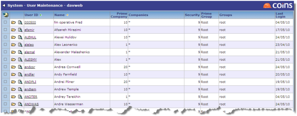
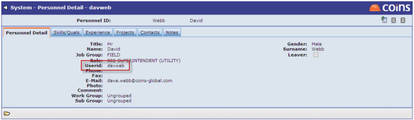

Users
All Project Management users require a user account.
To set up users:
- Create user records in Users. See Adding a New User or Group to .

- The projects that each user can access are determined by their User Views, which should therefore be set up appropriately for each user. See User View Set Up.
- Once a project becomes a , security is applied; as a result, each user also needs this set correctly. See Account and Security.
- Each user should have a personnel record created in Project Management Personnel. This record must be linked to their user record by entering their user ID on the Personnel Detail tab.
